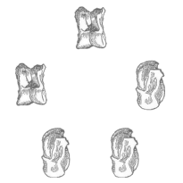
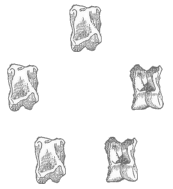

Astragalomancy
Also known as Astragyromancy is a form of Cleromancy, which involves the
casting of lots to determine an outcome.
Hucklebones (ankle bones of goats or sheep, and sometime oxen, or deer) in
Roman they were called “Tali,” in Latin they were
“Talus,” and in Greek they were called “Astragli.”
They were numbered I, III, IV and VI. 4 (or 5 in Greece) tali
were thrown at a time. The best throw possible was Venereus
(Venus) or Basilicus where I, III, IV and VI were
thrown (or Alpha, Gimmel, Dalet,
& Zeta or Digamma in Archaic Greece), this is the best throw and even beat
all sixes. The worst possible throw was Canes (Dog) or Canicula
which was I, I, I, I. The Ace point or 1 is flat and was called Canis or Canicula, it is the
narrow most basic side/surface. The 3
side is concave and was called Chius, it is the wide
side with a notch in it and called the back.
The 4 side is convex and was called Senio, it
is the large smooth side and known as the belly opposite the back. The 6 side is twisted and was called Venus,
it is the narrow side and the most complex surface. The sides opposite one another each add up to
7 (3+4 or 1+6). Six-sided dice were
called tesserae. They were often used like oracle bones and cast to divine the
future. Consultants prayed to the god before casting the dice, which were
kept around the statue of Herakles, who was thought of as providing the mantic
inspiration for the numbers that were rolled.
Plato in Phaedrus attributes the discovery of astragali
to the Egyptian god Thoth or Hermes.
Various Objects
Your bone set does
not need to necessarily be made up of bones but could be various objects that
have meaning to you. 10 to 15 objects
are more than enough to account for every eventuality. In Africa, we have the casting of the cowrie
shells which are used to foretell the fortunes of the hopeful. In Tibet, we
have Mo, which is a form of Astragalomancy, a
practice of casting knucklebones marked with specific symbols. In South
American there are root doctors that still cast bones to help clients.
Meaning of various
bones:
·
Large Bone - Male
aspects - Strength, Control, Aggressiveness, Father
·
Medium Bone - Female
aspects - Nurturing, Healing, Intuitiveness, Receptiveness, Mother
·
Predator Bone (Wolf
Bone) - Cunning, Being on the hunt.
·
Deer Foot Bone - Be
watchful, alert, and ready to make a move.
·
Coyote Tooth -
Someone is trying to trick you, A Fight, Lies
·
Snake Vertebrae -
Sex, cycles, Rejuvenation, Passion
·
Chicken Bone - Bad
luck, Death, Negative aspects, a loss
·
Cowrie Shell -
Communication if open mouthed, Lack of communication if closed mouth
·
Key - Doors open or
locked.
·
Green stone or Piece
of Amber - Money, Finances, Things of value
·
Foot Bones - Use
foot bones for success, protection when traveling, starting a new chapter in
life (for change) and to bless newborns.
·
Leg bones (or hind
leg bones) - Leg bones can be used in magick for stability in all areas of life
as well as love magick (not lust) to find soul mates.
·
Pelvic Bones - For
lust and fertility magick use pelvic bones.
·
Spine or Rib Bones -
For health, vitality, and energy, use rib bones. For stable health and energy, use spine
bones.
·
Arm Bones (or front
leg) - Use arm bones to work magick for career or to get things done.
·
Hand (or front paw)
Bones - Use hand bones for inspiration magick and creative endeavors of all
kinds.
·
Skulls - Use skulls
for any type of self-work or vision magick.
You can keep your
items in a small wooden bowl to contain the bones and have the client place
their hands over the bones to infuse them with their energy, or you can have
them hold the bones in their cupped hands.
For a generic Astragalomancy chart create a 12" x 12" circle
intersected by an X on the cloth or piece of leather. Designate each section as
North, East, South, and West.
·
North - Material
things, Ancestors, Finance, Jobs.
·
East - Emotional
things, relationships, Love.
·
South - Sexual
energy, battle, Conflicts.
·
West -
communication, Intellect, Thoughts.
An inscription in Limyra, a city in ancient Lycia records an oracle that
documents an ancient Greek form of astragalomancy. Traditionally, the seeker would go into the
temple, and after a prayer, and probably making an offering to the deity of the
temple (or donation to the priests) they would consult the bones. Five bones would be rolled like dice (or 1
bone, 5 times). The total score from
rolling the bones provides a number, which would determine the advice of the
gods.
In the same
geographical area in which these astragaloi
inscriptions and oracles are found, twelve sites possessed ‘alphabet oracles’,
which were inscribed on stone in the late second century AD. A preamble was followed by a list of the
twenty-four letters of the Greek alphabet, with a response after each letter.
‘Alpha’ for example, is followed by ‘You will carry off everything
successfully’. A throw, or throws, of an astragalos,
or several astragaloi, would give a number
corresponding to a letter in the Greek alphabet, which would provide the
enquirer with a response.
·
Sit where you feel
most comfortable, ideally at a desk or at a table. Make sure the area in front
of you is neat and clean.
·
Concentrate on the
question, repeating it in your mind.
·
Relax. Take a deep
inhalation down into the center of your belly, breathing as a baby breathes,
and hold that inhalation briefly.
·
Toss the 4 (or 5)
knucklebones. Or if you don’t have bones
toss the three coins.
o
Establish the
numerical value that the faces of the coins stand for as described above.
o
Do this four more
times, representing a total of five throws of a single astragalus
or a single toss of five astragali. Make sure that
you retain your concentration and briefly hold your breath each time you make a
throw.
o
Add up the total.
Refer to the "List of Divination Combinations" at the back of the
book. Find the divination that correlates to the total numerical value you have
thrown. There is an oracular verse corresponding to the precise configuration
of each possible throw.
Response number one
being for Olympian Zeus and then ranging through numerous gods until the
fifty-sixth, who was Hermes Tetragonus.
|
|
Total Value |
Combination |
Name |
Description |
Image |
|
1 |
5 |
11111 |
Olympian Zeus |
All throws are
ones, hear the voice of the Shining One. Zeus Savior will inspire you; He will give you
happiness and all that you wish for. But sing the
praises of Aphrodite and Hermes, son of Maia. |
|
|
2 |
7 |
11113 |
Athena Who Judges |
Four ones and a three
command the following: By avoiding Enmity
and Hatred, you will attain your reward. Reaching this
journey’s end, you will be saved by Athena Bright eyes. Her judgment,
which she imposes, will be for you welcome. |
|
|
3 |
8 |
11114 |
The Fates |
A single four
falls, and four ones: Do not act upon
that which you now pursue, for it will not be good; He who tries will find
the task both difficult and impossible. For now, you must
travel abroad; the future, however, hides no evil. |
|
|
4 |
9 |
33111 |
The Eagle of Zeus |
Two threes fall,
and three ones: The high-flying
Eagle will guide you to the right hand. Your fortune will be positive; with
great Zeus’s aid, You will succeed
in what you strive for with passion. Fear nothing. |
 |
|
5 |
10 |
61111 |
The Great Spirit |
One six and four ones
come to you: The god who has
blessed you will grant you the best of outcomes if you act upon that which
you have in your mind. Demeter and Zeus will be your saviors. |
|
|
6 |
10 |
11143 |
Tyche, Opportune Chance |
If there are three
ones, one four, the fifth a three: Do not proceed
with that which is imposed on you. Now, though you
are in sadness, the gods will guide you; They will deliver
you from suffering, and there will be no evil. |
|
|
7 |
11 |
33311 |
Nike, Goddess of Victory |
If three threes
fall, and the remaining two are ones: You will accomplish what you desire,
all is yours. If you honor the gods,
you will triumph. The judgment they
impose will be welcome to you. |
|
|
8 |
11 |
11144 |
Artemis of Bravrona |
You see three ones
the rest are fours: Do not sow into
the wind, nor plant seeds in hard stone. Do not sail on
deep oceans during the storms of winter. Contemplate quietly and remain
unaffected by all this. |
|
|
9 |
12 |
11136 |
Dionysus Bassareus |
One lone six, one
three, and three ones fall: Be in no hurry to
harvest the buds of the vine, nor the summer figs, nor should you prepare
your weights for the line, for you will lie heavy in the waves. Your obligation
lies elsewhere, and it eludes you. |
|
|
10 |
12 |
11334 |
Zeus the King |
Two ones fall, two
threes, and a four: Proceed. You will
achieve your goals beyond your wildest dreams. And those things
that seem fearful, the god decrees will bring you joy. Honor the great
king, Zeus, and Lord Apollo Light-bearer. |
|
|
11 |
13 |
11164 |
Hermes of the Games |
One six, three
ones, the fifth is a four: Stranger, your
business in foreign lands will go well. Do not seek for opportunity;
the god will arrange for your happiness. For it is not
difficult for this situation to bring you gains. |
|
|
12 |
13 |
11344 |
The Melodious Muse |
If one three
falls, two ones, and two fours: You would do well
to act. Good prospects, profits easily gained. It is better now
to participate, rather than to try to create. Keep private, in
order to succeed, the sweet verse of the Muse. |
|
|
13 |
13 |
33331 |
Themis |
A single one
falls, and four threes: This road has no
gains for you and is impassable. Be in no hurry at present. The god will not
allow that which you pursue; you must wait. It is distressing
to enter into conflict and legal trials. |
|
|
14 |
14 |
13334 |
Triton |
A single one and
three threes, the fifth a four: Your attempts are
in vain; you struggle against the waves. You seek a fish in
the ocean; be in no hurry to act. Nor is it useful
for you to make demands of the gods at the wrong time. |
|
|
15 |
14 |
61133 |
Hermes the Guide |
One six, two ones,
and two threes: Do not reflect
upon evil, nor go against the god, planning calamities, for there is nothing
useful in this. Neither on the
path you are taking, will you uncover gain in the end. |
|
|
16 |
14 |
44411 |
The Benevolent Spirit |
Should three fours
fall and two ones: The god will lead you
down the path he imposes. Smiling Aphrodite will guide you with benevolence; Your path will be
productive, and no clouds hang over your fate. |
|
|
17 |
15 |
13344 |
Zeus the Savior |
A single one, two threes
fall, and two fours: For such deeds as
must transpire, with courage, take action. Proceed, for the
gods send good tidings on this matter. Spare no efforts; there is nothing
evil ahead for you. |
|
|
18 |
15 |
11166 |
Zeus Ammon |
If three ones fall
and two sixes: On that path which
inspires you, walk boldly ahead. The god will grant
you everything; proceed as your inspiration commands. Zeus, who thunders
in the heights, will be your savior. |
|
|
19 |
15 |
33333 |
Benevolent Fortune |
Should all throws
be threes, then hear the voice of the Shining One. She who has borne
a child, found both her breasts dry. But lo, she has flowered
once again and has milk aplenty; And all will be
well for you, concerning that which you ask of me. |
|
|
20 |
15 |
43611 |
Zeus the Guardian of Travelers |
One four, one
three, one six, and two ones: Concerning that
which you strive for, be patient, it is not yet time. And should the
gods present you with sadness, they will redeem you willingly. He who is in
foreign lands will complete his journey, says the god. |
|
|
21 |
16 |
63331 |
Hercules |
One six, three
threes, the fifth a one: It is not yet
time, be in no hurry; do not act foolishly. Be not like the
lioness that bore a den of blind cubs.
Prepare yourself calmly, and the god will guide you. |
|
|
22 |
16 |
64411 |
Cybele |
One six, two
fours, and two ones: From dry branches
one cannot harvest fruit. Neglect your own
self, and life becomes unlivable. Neither is it
possible to reap bountiful fruit, when you have not sown. |
|
|
23 |
16 |
13444 |
Prometheus |
A single one, one
three, the rest are fours: The circumstances
promise great reward. If you act wisely on
what the divination tells you, stranger, you will succeed; From the gods, you
have just approval for that which you seek. |
|
|
24 |
16 |
33334 |
The Fertile Earth |
Should a single
four fall and all the rest threes, then you will succeed in all things, and
command capably. Along with luck,
you will have the aid of Apollo. The Earth will
bear you perfect fruit for your labors. |
|
|
25 |
17 |
33344 |
Nereus |
The threes are three,
the fours are two: It is difficult to
fight against the waves. Stay, friend; Hard labor is necessary. Changes will
be good. Avoid extreme turmoil, for you may suffer evil. |
|
|
26 |
17 |
13346 |
Artemis of the Fields |
One six, a single
one, one four, the rest are threes: When a rabbit
happens by, then all will go well. Cease your suffering, for happiness awaits
you. By honoring the
gods, you will nourish your consciousness. |
|
|
27 |
17 |
11366 |
Fruit-bearing Demeter |
If two sixes fall,
two ones, the fifth a three: Gather an unripe
fruit, and it is not useful. After many
contests, the laurels will be yours. But strive with
deliberation; do not act in haste and violence. |
|
|
28 |
17 |
14444 |
Zephyrus |
If a single one
falls, and the rest are fours: The god will now
complete everything for you and guide you favorably. Act upon all
things according to your plans. Torment yourself no longer; You will craft all
that you desire with perfection. |
|
|
29 |
18 |
66411 |
Adrasteia, She Who None Can
Escape |
If two sixes fall,
two ones, the fifth a four: That upon which
you act will be positive. Good fortune will be yours from the beginning, and
all danger will be swept aside. All other divinations will be positive for
you. |
|
|
30 |
18 |
16443 |
Zeus the Thunderer |
A single one, one
six, two fours, the fifth a three: It is not possible
to fulfill your desires, the god judges; Nor will it benefit you to journey
far from your home. Nor through
payment will you find anything beneficial. |
|
|
31 |
18 |
44433 |
The Supplicant Deity |
Three fours, and
two threes fall: I see no safe path
for you. Be patient. Events will favor
you after this, but for the present do nothing. Have faith in the
gods and remain hopeful. |
 |
|
32 |
18 |
63333 |
Benevolent Time |
One six, four
threes, the following command: Be in no hurry to
move forth; the god disagrees, be patient. Be not like the lioness
that bore a den of blind cubs. Prepare yourself
calmly, and all will be happily completed in your favor. |
|
|
33 |
19 |
66133 |
Good Hope |
Two sixes and two
threes, a single one, so command: Easily traveled
and secure will be your path, concerning that which you ask. Fear nothing; the
god will guide you in all things. He will end the
burden of sadness and dissipate suspicion. |
|
|
34 |
19 |
44461 |
Zeus the Creator |
Three fours, one six,
the fifth a one: Endeavor with
courage, for the divination brings you hope; The god declares
that he who is ailing will be saved. And if events
impose on you a duty, fulfill it, for you will be rewarded. |
|
|
35 |
19 |
34444 |
Hermes, Who Presides Over Gain |
Should a single
three fall, and all the rest fours: Hermes will grant
you the appropriate inspiration; he will confer on you a boon. You will have it
all; you will achieve what you desire. You will discover
that which he foretells, and there will be no evil. |
|
|
36 |
19 |
63334 |
Victory Triumphant |
One six and three
threes, the fifth a four: I foresee good
things, stranger, in this consultation. And he who walks in foreign lands
will end his journey well. With the help of
great Zeus, you will soon achieve what you strive for. |
|
|
37 |
20 |
66611 |
The Victorious Sun |
If three sixes fall,
the rest are ones, A bright sun
watches over you, who sees all things. For the problems
you now face, you will find a solution. A gift that brings
victory will complete this foretelling. |
|
|
38 |
20 |
44444 |
The Heavenly Fates |
If all the tosses
are fours, take no action now; There is no reward
along this path. For I see guile in
you regarding that which you ask of me; Nor should you, a
mortal man, pressure the god into giving you his blessing. |
|
|
39 |
20 |
43661 |
Nemesis |
A four, a three,
two sixes, the fifth a one: Concerning that
which you intend, make haste; all will be yours afterward. Those things that until
now brought you sorrow, will be directed to your advantage, says the god. Be
at peace; there is no evil ahead for you. |
|
|
40 |
20 |
63344 |
Zeus, The Guardian of the Dead |
A single six, two
threes, and two fours fall: It is not possible
to achieve in haste that which your fortune commands. You will find
benefit; the god will relieve you of your burden. The task will be
easy but protect yourself from evil. |
|
|
41 |
21 |
66441 |
Demeter |
Two sixes, two
fours, the fifth a one: Your road will be
easy, and all things secure, concerning that which you ask. Fear nothing; the
goddess will guide you in all things. She will drive
away the burden of sorrow and dissipate suspicion. |
|
|
42 |
21 |
44463 |
The Shining Sun |
Three fours, one six,
the fifth a three: You will achieve
what you desire and will uncover that which troubles you. Endeavor,
stranger, with courage, for all is in readiness. You will uncover
the hidden; your day of deliverance is at hand. |
|
|
43 |
21 |
33366 |
Good Fortune, Who Delivers Us from Pain |
If three threes
fall, and two sixes, this they command: There are good
deeds; make haste to perform them. You will be
delivered from heavy sorrow and triumph over all. And he who wanders
in foreign lands will return home, the god declares. |
|
|
44 |
22 |
16663 |
The Renowned Fates |
A single one,
three sixes, the fifth a three: Put not your hand
into the mouths of wolves, for you may suffer harm. What you ask of me
is difficult and uncertain. Even so, you will
end this road of unproductive wandering in peace. |
|
|
45 |
22 |
64444 |
Poseidon |
A single six
falls, the rest are fours: Sow not into the
sea, nor try to write on the crests of waves; Both are a waste
of effort, and an impossible task. Nor should you,
mortal man, make demands of the god, who may bring you grief. |
|
|
46 |
22 |
66433 |
Raging Ares |
Should two sixes
fall, one four, and two threes: Do not advance
toward your goals, stranger. This I prophesy: Into the battle
has come a powerful lion; guard yourself, for it is terrible. It is not possible
to achieve that which you seek; do nothing. |
|
|
47 |
23 |
16664 |
Athena |
A single one,
three sixes, the fifth a four: Honor Pallas
Athena and all will be yours; All that you
desire, and all that you have planned for, will come to you. She will free you
from bondage and relieve the ailing from pain. |
|
|
48 |
23 |
66443 |
Euphrosyne |
Should two sixes
fall, two fours, the fifth a three: Sally forth,
follow your instincts, and quickly, for you will return home. Discover what
inspires you and act upon it, for you will conquer all. All about you is
happiness, and you have nothing to fear. |
|
|
49 |
24 |
66633 |
Pythian Apollo |
Three sixes, and
two threes, hear the following: Stay, do not act, and
obey the words of the Radiant One. In the future, lie
in wait for your chance, but do nothing now. There are
obstacles ahead, but you will complete that which concerns you. |
|
|
50 |
24 |
44466 |
Cronus, Who Devours His Children |
Three fours, two
sixes, this the god commands: Remain in your
home with serenity; go nowhere else, lest a fearful and vengeful beast spring
out of the earth and come against you. This action
appears neither safe nor secure to me. |
|
|
51 |
25 |
46663 |
The Shining Month |
One four falls,
three sixes, the fifth a three: With courage, you
will have the opportunity to achieve your desire. You will succeed by
dashing to your goal. Your efforts will be rewarded. You are bound,
however, to strive for the greater good, in a just struggle. |
|
|
52 |
25 |
66661 |
The Mother of the Gods |
Four sixes, the
fifth a one, so command: As wolf’s snatch
sheep, and powerful lions seize horned oxen, so will you conquer over all. All that you ask
of me will be yours, with the aid of Hermes, son of Zeus. |
|
|
53 |
26 |
66644 |
Zeus of the Underworld |
Three sixes, two
fours, so do I prophesy: This act will find
barriers ahead; be in no hurry, have patience. For this road
bears sadness; it is both inapproachable and difficult to traverse. It will be
difficult to buy, and should you sell, it will be at a loss. |
|
|
54 |
27 |
66663 |
Celestial Aphrodite |
Four sixes and one
three command the following: The daughter of Heaven, Aphrodite, Queen of
Love, will send you good tidings. She will prepare a path of escape for you from
the pain and anxiety crushing your heart. |
|
|
55 |
28 |
66664 |
Damage |
Four sixes and one
four command the following: You will have no
luck. Why fight a futile battle? Stay, for you may
be injured in your haste. It is neither wise
to rush toward your goal, nor to wander like a fool. |
|
|
56 |
30 |
66666 |
Hermes of the Square |
If all throws be
sixes: Travel not toward
your goal; better to stay in place. For I see guile in
you regarding that which you ask of me. Nevertheless, you
will end your futile journey in peace. |
|


{kind=link}
{kind=link}
{kind=link}
{kind=link}